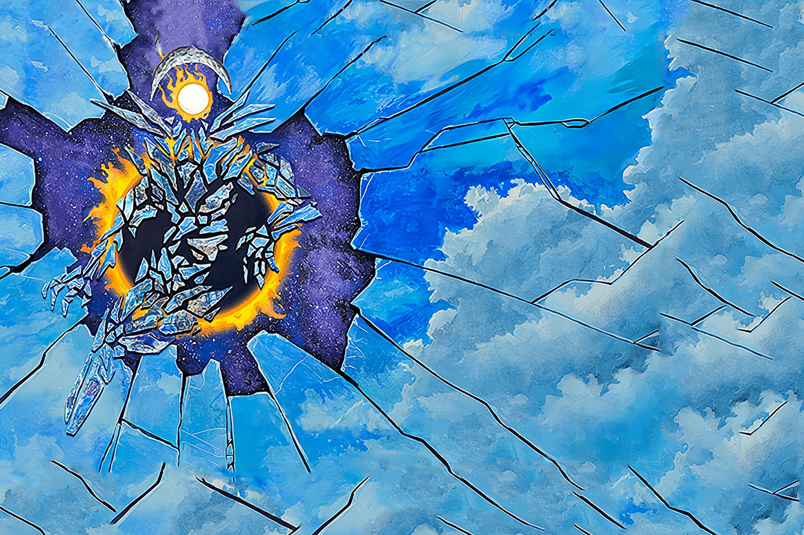

Fractured Days Split the Sky
The sun and moon are short-term timekeepers of Spirit Island, measuring days and months with their rise and set, wax and wane. When they meet in a solar eclipse, time collides with time, sending jagged pieces of Was, Will-Be, and Might-Have-Been tearing through the weave of seasons and years. Gleaming vision-shards of future or past events may shimmer across the sky, but often those futures or pasts do not match what others know.
Fractured Days Split the Sky exists mostly in the high reaches of the heavens, but touches the island now and then, time and possibility flowing around it like a wind-blown mantle.
SETUP:
Put 3 {presence} on your starting board: 1 in the lowest-numbered land with 1 {dahan}, and 2 in the highest-numbered land without {dahan}. Deal 4 Minor and Major Powers face-up as your initial Days That Never Were cards; in a 1 or 2-player game, instead deal 6 of each. In a 1-board game, gain 1 Time.
Play Style:
Excellent at support and sweeping indirect effects, but starts off very limited otherwise. Several of its Unique Powers need setup to use well; it's entirely possible 1 or 2 of them may see no play in a given game.
Has a hard time getting lots of {presence} onto the board. This can make targeting tricky, and may be quite dangerous if a Blighted Island effect Destroys {presence}.
COMPLEXITY
Very High
|
Summary of Powers
|
|
|
|
|
|
|
OFFENSE
|
CONTROL
|
FEAR
|
DEFENSE
|
UTILITY
|